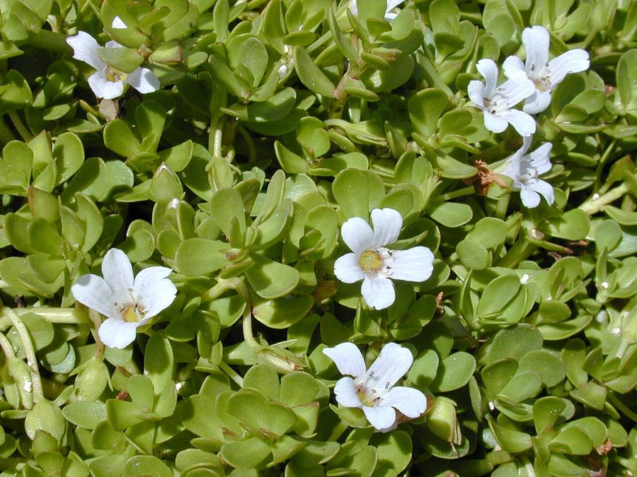

ब्राह्मीBrahmi
Bacopa monnieri · Plantaginaceae · FLR-0040

- Scientific name
- Bacopa monnieri (L.) Pennell
- Family
- Plantaginaceae
- Hindi
- ब्राह्मी
- Status here
- native
- IUCN
- LC
When to look कब देखें
Present all year.
ब्राह्मी / Brahmi
Bacopa monnieri (L.) Pennell — Plantaginaceae
ब्राह्मी — उत्तर प्रदेश के तालाबों के किनारों, धान के खेतों की मेड़ों और जलभराव वाले दलदली स्थानों में प्राकृतिक रूप से उगने वाली एक छोटी, रेंगने वाली बारहमासी जड़ी-बूटी है। यह आयुर्वेद में मस्तिष्क की शक्ति, स्मृति और एकाग्रता को बढ़ाने वाले एक प्रमुख मानसिक टॉनिक ('मेध्य रसायन') के रूप में 3,000 से अधिक वर्षों से उपयोग की जा रही है। इसके पत्ते छोटे, मोटे, मांसल (succulent) और अंडाकार होते हैं, और इस पर छोटे, हल्के नीले या सफेद रंग के फूल खिलते हैं। स्थानीय स्तर पर, इसके पत्तों को घी में तल कर खाया जाता है या इसका ताजा रस निकालकर पीया जाता है। यह पौधा गीले मिट्टी वाले क्षेत्रों में तेजी से फैलकर हरित आवरण प्रदान करता है और जल को स्वच्छ रखने में भी मदद करता है।
Quick Identification त्वरित पहचान
| Feature | Description |
|---|---|
| Size & Habit | Small, creeping, succulent perennial herb; forms dense green mats on wet soil or shallow water |
| Stems | Soft, fleshy, prostrate stems (10–30 cm long) that root easily at the nodes (rooting nodes) |
| Leaves | Oblanceolate to spatulate, thick, fleshy, opposite leaves (1–2 cm long) with entire margins and rounded tips |
| Flowers | Small, solitary, bell-shaped flowers (8–10 mm diameter) with five petals; colour ranges from white to pale blue or lavender |
| Fruits | Small, ovoid, capsules containing numerous tiny, dark brown seeds |
Field tip: Look for a low-growing green mat of fleshy, spoon-shaped leaves on wet mud near water. Pinching a leaf reveals a slightly bitter taste and a mild herb-like aroma. It bears tiny white or pale-blue five-petaled flowers.
Morphology आकारिकी
Biometrics (typical measurements in the Gangetic plain):
| Feature | Measurement |
|---|---|
| Plant height | 5–15 cm |
| Leaf length | 10–20 mm |
| Leaf width | 4–8 mm |
| Flower diameter | 8–10 mm |
| Fruit dimensions | 4–5 mm x 2–3 mm |
Stems & Roots: Stems are succulent, green, cylindrical, and prostrate, spreading horizontally over the mud. Roots arise from the nodes where the stem touches wet soil, allowing rapid clonal growth.
Leaves: Leaves are simple, sessile, decussate (opposite), obovate-oblong or spatulate. They are thick, smooth, and contain watery sap.
Flowers & Fruits: Flowers are axillary, solitary, on long slender stalks. The corolla is pale blue or white, with five lobes. The fruit is a capsule, containing tiny, oblong seeds with longitudinal ribs.
Vocalisations
Plants do not possess nervous systems or vocal organs and cannot produce sounds.
- Sound production: Silent; no sound production.
Behaviour & Ecology व्यवहार और पारिस्थितिकी
Bacopa monnieri is a water-loving (hydrophilic) plant, adapted to tolerate periodic flooding and mud cover. It propagates primarily vegetatively, forming large mats that stabilize loose mud along pond banks. The plant is a hyperaccumulator of heavy metals (like lead and cadmium), functioning as an important bio-remediator in village wetlands.
Life Cycle / Phenology जीवन चक्र
- Flowering: Occurs almost year-round under warm, humid conditions, with peak flowering from May to October.
- Propagation: The plant quickly expands via runners rooting at nodes. Seeds disperse locally via water during the monsoon floods.
- Lifespan: Perennial herb.
Host Plants or Prey आहार
Primary nutrition:
- Photosynthesis: Autotrophic plant. Obtains energy from sunlight, water, and atmospheric carbon dioxide.
Predators / Natural Enemies शत्रु
- Insects: Grasshoppers and leaf-mining beetles occasionally feed on leaves.
- Snails: Aquatic snails ([MOL-0003 Freshwater Pond Snail]) consume submerged portions.
- Humans: Collected in large quantities from the wild for medicinal use.
Agricultural / Human Relevance कृषि प्रासंगिकता
Traditional and Ethnobotanical Use पारंपरिक और लोक-वानस्पतिक उपयोग
Bacopa monnieri is a legendary herb in Indian traditional medicine, classified as a Medhya Rasayana (cognitive rejuvenator). The entire plant, especially the leaves, is utilized in various preparations:
- Memory & Mental Fatigue: Fresh leaves are crushed to extract juice (about 5–10 ml), which is mixed with milk or honey and consumed in the morning to enhance memory and reduce stress.
- Anxiety & Insomnia: Whole plant paste is boiled in cow's ghee to prepare Brahmi Ghrita, a highly valued Ayurvedic formulation taken to relieve anxiety, epilepsy, and sleep disorders.
- Hair Health: Dried Brahmi leaves are infused in coconut or sesame oil and massaged into the scalp to cool the head, promote hair growth, and prevent dandruff.
- Skin Irritation & Wounds: The fresh paste of leaves is applied topically to soothe skin eczema, minor burns, and localized insect bites.
- Cough & Throat Hoarseness: Fresh leaf juice is mixed with black pepper and honey, consumed to clear throat infections and relieve dry coughs.
Religious and cultural significance. In eastern Uttar Pradesh, Brahmi is culturally associated with Saraswati, the Hindu goddess of wisdom, learning, and the arts. The plant is occasionally grown in small pots near domestic altars or courtyard water structures (tulsi chaura margins) to bring mental clarity and positivity.
Traditional ecological knowledge. Local farmers recognize Brahmi as a marker of high soil moisture and clean water availability. It is traditionally harvested after the monsoon rains (September to November) when the stems are thickest and most succulent, containing the highest concentration of active compounds (bacosides).
Expected Locally स्थानीय रूप से अपेक्षित
Not a field record. Written from published accounts for eastern Uttar Pradesh. No confirmed local sighting yet — if you have seen it, that is what the atlas needs.
अभी तक स्थानीय पुष्टि नहीं। यह विवरण प्रकाशित स्रोतों से है, किसी अवलोकन से नहीं।
Commonly observed in Basti district along the margins of village ponds (pokhra), wet irrigation channels (naali), and wet borders of rice fields (dhaan ki meḍ). Local vaidyas and grandmothers (dadi-nani) regularly collect wild Brahmi for home remedies.
Distribution वितरण
Global range: Pantropical and subtropical distribution, including Asia, Africa, Australia, and parts of the Americas.
In India: Widespread throughout wetland plains and foothills up to an altitude of 1,400 meters.
In Uttar Pradesh: Abundant in Gangetic plains, canals, and riverbanks.
In Basti district / eastern UP: Found in all rural wetland margins, sugarcane ditches, and marshy lowlands.
Research Questions शोध प्रश्न
Anyone can investigate these | कोई भी इन प्रश्नों की जाँच कर सकता है
- How does the concentration of active bacosides in Brahmi vary between plants grown in full sun vs. deep shade? — Extract and analyze leaf samples from different light zones.
- What is the efficiency of Bacopa monnieri in absorbing excess nitrogen and phosphorus from agricultural run-off? — Measure water nutrient levels before and after routing through Brahmi mats.
- Can you grow a new Brahmi plant by simply cutting a stem and placing the nodes in wet mud? / क्या आप तने के एक टुकड़े को काटकर गीली मिट्टी में नोड्स को दबाकर एक नया ब्राह्मी का पौधा उगा सकते हैं? — Plant stem cuttings with different numbers of nodes and monitor growth.
- How do local communities in Basti preserve harvested Brahmi leaves for use during dry summer months? / बस्ती के स्थानीय समुदाय शुष्क गर्मियों के महीनों में उपयोग के लिए ब्राह्मी के पत्तों को कैसे संरक्षित करते हैं? — Interview elders on traditional drying and storage methods.
- Does the rate of vegetative growth of Brahmi show a significant increase in organic manure-rich soils? — Compare stolon extension rates in manure-enriched vs. standard soils.
Similar Species मिलती-जुलती प्रजातियाँ
| Species | How to tell apart | हिंदी |
|---|---|---|
| Gotu Kola (Centella asiatica) | Leaves are round or kidney-shaped with crenate margins; stalks are long and thin; flowers are reddish; grows in damp soils | गोटू कोला / मंडूकपर्णी — गोल कटे हुए पत्ते, लम्बा डंठल |
| Water Hyssop (Bacopa caroliniana) | Leaves are broader and clasp the stem; has a strong lemon-like scent when crushed; flowers are bright blue | जलीय हइसोप — नींबू जैसी गंध, चौड़े पत्ते |
| [FLR-0029 Water Lettuce] | Free-floating rosette of large, spongy, ribbed leaves; lacks creeping stems | जलकुंभी — तैरता हुआ बड़ा पौधा, स्पंजी पत्ते |
Field rule: Low creeping habit, succulent spatulate opposite leaves with a bitter taste, and tiny five-petaled white or pale blue flowers identify the Brahmi plant.
Taxonomy & Classification वर्गीकरण
Original description. Carl Linnaeus described the species as Lysimachia monnieri in 1756 in his work Centuria II Plantarum (page 9). It was later transferred to the genus Bacopa by Francis W. Pennell in 1946 in the Proceedings of the Academy of Natural Sciences of Philadelphia (Volume 98, page 83). The genus name Bacopa is derived from a South American aboriginal name, and monnieri honors the French botanist Louis Guillaume Le Monnier.
Subspecies. Monotypic.
Family and order placement. Placed in the order Lamiales, family Plantaginaceae (historically in Scrophulariaceae).
Phylogenetic notes. Molecular studies place Bacopa in the tribe Gratioleae within the plantain family.
IUCN status rationale. Listed as Least Concern (LC) due to its vast global distribution, high adaptability, and lack of immediate threat of extinction.
Photo Gallery फोटो गैलरी
References संदर्भ
- Linnaeus, C. (1756). Centuria II. Plantarum. Upsaliae, p. 9. [original description as Lysimachia monnieri]
- Pennell, F.W. (1946). Reconsideration of the Scrophulariaceae of eastern temperate North America. Proceedings of the Academy of Natural Sciences of Philadelphia, 98, p. 83.
- Sivarajan, V.V. & Balachandran, I. (1994). Ayurvedic Drugs and Their Plant Sources. Oxford & IBH Publishing, New Delhi, pp. 97–99.
- Russo, A. & Borrelli, F. (2005). Bacopa monniera, a reputed nootropic aphrodisiac plant: An overview. Phytomedicine, 12(4), 305–317.
- United States Department of Agriculture (2024). Bacopa monnieri. Natural Resources Conservation Service Database.
- Lansdown, R.V. (2019). Bacopa monnieri. IUCN Red List of Threatened Species. Ver. 2019.
- GBIF Occurrence Data — Bacopa monnieri, Uttar Pradesh (2010–2025).
Source file: species/flora/medicinal/brahmi.md